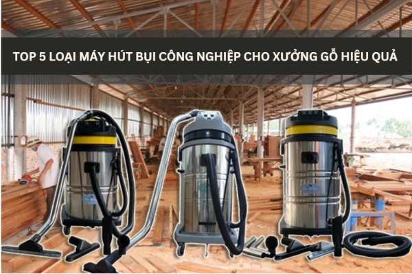
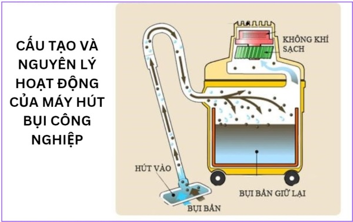
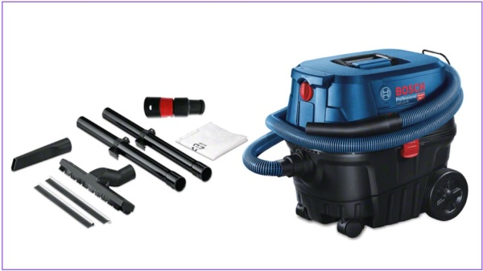
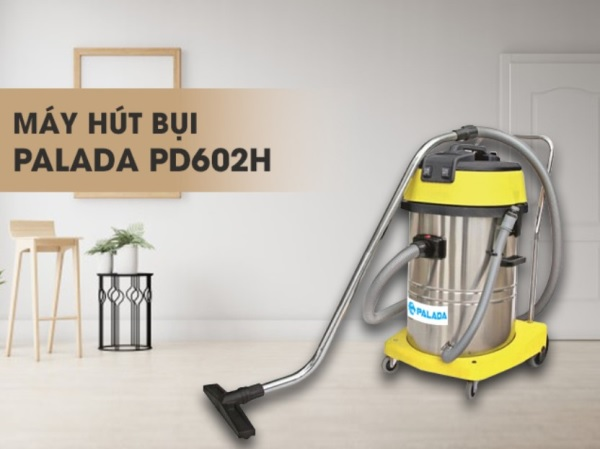
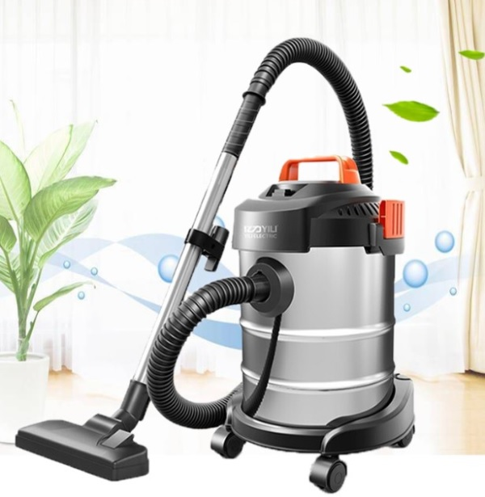
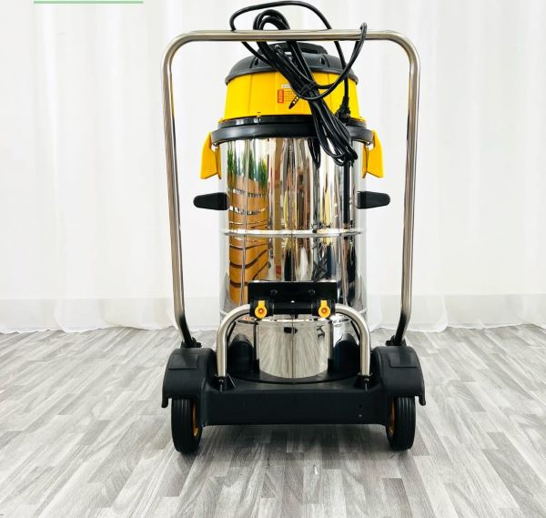
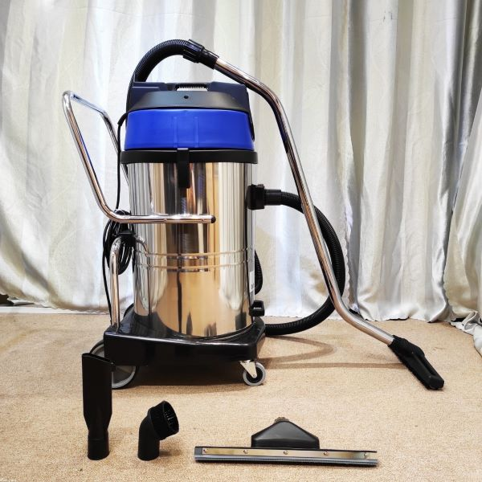
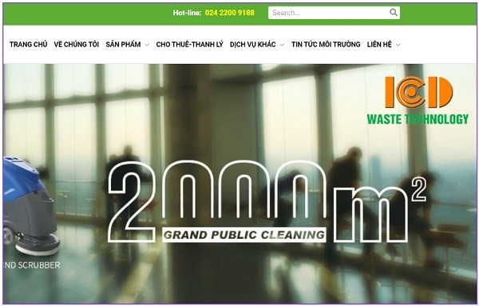

Trong các xưởng gỗ, máy hút bụi công nghiệp là một thiết bị không thể thiếu. Các loại máy hút bụi này giúp hút sạch bụi gỗ, mạt gỗ, mùn cưa,… Từ đó giúp cho môi trường làm việc trong xưởng luôn sạch sẽ, thoáng mát và đảm bảo an toàn sức khỏe của người lao động. Tham khảo bài viết sau để biết về cấu tạo, nguyên lý hoạt động cũng như kinh nghiệm cần có để mua máy hút bụi công nghiệp xưởng gỗ cho cơ sở sản xuất của mình.

Cấu tạo và nguyên lý hoạt động của máy hút bụi công nghiệp
Cấu tạo
Máy hút bụi công nghiệp công suất cho xưởng gỗ bao gồm các bộ phận chính sau:
♦ Thùng chứa bụi: Được làm bằng thép, inox hoặc nhựa. Thùng chứa bụi có dung tích lớn giúp chứa được nhiều bụi bẩn.
♦ Túi lọc bụi: Làm bằng vải hoặc giấy lọc. Nó có tác dụng giữ lại bụi bẩn trước khi được thải ra ngoài.
♦ Quạt hút: Có tác dụng hút bụi và khí bẩn vào bên trong máy.
♦ Motor: Bộ phận cung cấp lực hút cho máy.
♦ Van xả bụi: Giúp xả bụi bẩn ra ngoài khi túi lọc bụi đã đầy.
Nguyên lý hoạt động
Khi máy được khởi động, motor sẽ quay và tạo ra lực hút. Bụi và không khí được hút vào máy thông qua các ống dẫn và đầu hút. Dưới tác dụng của lực hút mạnh mẽ từ quạt hút, bụi và không khí sẽ được đưa vào hệ thống lọc. Khi bụi bẩn đi qua túi lọc bụi, bụi bẩn sẽ bị giữ lại và khí sạch sẽ được thải ra ngoài môi trường.

Công suất máy hút bụi gỗ công nghiệp
Công suất máy hút bụi công nghiệp xưởng gỗ là yếu tố đáng quan tâm khi lựa chọn sản phẩm. Máy hút bụi xưởng mộc ngày nay được thiết kế với nhiều mức công suất khác nhau (0.75kW - 1HP, 1.1kW - 1.5HP, 1.5kW - 2HP, 2.2kW - 3HP, 3kW - 4HP, 4kW - 5.5 HP, 5.5kW - 7.5HP). Tùy vào nhu cầu sử dụng mà lựa chọn một mức thích hợp. Công suất càng lớn thì lực hút càng mạnh, giúp hút sạch bụi bẩn nhanh chóng.
Đặc điểm nổi bật của máy hút bụi công nghiệp
Máy hút bụi công nghiệp sở hữu nhiều đặc điểm nổi bật giúp hút bụi hiệu quả trong môi trường công nghiệp khắc nghiệt, đáp ứng nhu cầu làm sạch chuyên sâu so với máy hút bụi gia đình thông thường.
Một số đặc điểm nổi bật của máy hút bụi công nghiệp bao gồm:
- Công suất lớn, lực hút mạnh: Động cơ của máy hút bụi công nghiệp có công suất lớn hơn nhiều so với máy hút bụi gia đình, cho phép hút sạch bụi bẩn, mùn vụn và cả những vật liệu nặng hơn.
- Dung tích thùng chứa lớn: Máy hút bụi công nghiệp có dung tích thùng chứa lớn hơn đáng kể so với máy hút bụi gia đình, giúp việc thu gom bụi bẩn trong thời gian dài mà không cần đổ bụi thường xuyên, cải thiện hiệu suất làm việc.
- Phụ kiện đa dạng: Máy hút bụi công nghiệp thường đi kèm với nhiều phụ kiện khác nhau, chẳng hạn như bàn hút bụi, bàn hút nước, ống hút khe, chổi tròn, giúp người dùng dễ dàng làm sạch mọi ngóc ngách, trên nhiều bề mặt chất liệu.
Khả năng hút ướt và khô: Nhiều máy hút bụi công nghiệp hiện nay có khả năng hút cả bụi khô và nước, giúp người dùng linh hoạt hơn trong việc vệ sinh.
Tại sao nên sử dụng máy hút bụi cho xưởng gỗ?
Thực tế, bụi trong các nhà máy sản xuất gỗ hơn 90% là tác nhân của các căn bệnh nguy hiểm về đường hô hấp như viêm phổi, hen suyễn, xoang,… thậm chí tệ hơn là ung thư. Ngoài ra, bụi gỗ mịn còn là nguyên nhân gây ra tình trạng nóng máy, hỏng hóc thiết bị và giảm hiệu quả. vận hành
Để giải quyết tất cả những vấn đề trên, việc sử dụng máy hút bụi chuyên biệt dành cho xưởng gỗ là giải pháp hữu hiệu nhất. Với lựa chọn đa dạng về thương hiệu, công suất, tính năng hay giá thành thì máy hút bụi nhà xưởng giúp tiết kiệm thời gian và đảm bảo sức khỏe cho người dùng.
Top 5 máy hút bụi xưởng gỗ tốt nhất xu hướng 2024
Dựa trên các tiêu chí như công suất, dung tích, tính năng, giá thành,… dưới đây là top 5 máy hút bụi xưởng gỗ tốt nhất theo xu hướng 2024:
Máy hút bụi dòng 803J thương hiệu Life Clean
Thương hiệu Life Clean có lẽ đã quá quen thuộc với nhiều người. Máy hút bụi công nghiệp của hãng luôn được trang bị công nghệ hút bụi tiên tiến nhất. Dòng máy hút bụi Life Clean 803J được ra mắt gần đây có công suất 3.600W, được trang bị 3 motor và có dung tích thùng chứa bụi lên đến 80 lít. Hơn nữa, máy có túi lọc bụi chất lượng cao, lực hút mạnh mẽ, giúp hút sạch bụi bẩn trong thời gian ngắn. Đồng thời, máy hút bụi được làm từ Inox có độ bền cao và chất va đập tốt. Trang bị nhiều tính năng hiện đại như: Hệ thống lọc bụi HEPA, van xả bụi nhanh chóng,…
Máy hút bụi gỗ GAS 12-25 công nghiệp thương hiệu Bosch
Bosch GAS 12-25 thuộc dòng máy hút bụi công nghiệp tầm trung đến từ Đức. Nó có công suất thiết kế là 1.250W, dung tích thùng chứa 21 lít, phù hợp với các xưởng gỗ quy mô vừa và nhỏ. Máy được trang bị hệ thống kết nối trực tiếp với các thiết bị công nghiệp khác nhằm lọc bụi kép, giúp lọc sạch bụi bẩn hiệu quả.

Máy hút bụi gỗ BF-575 công nghiệp thương hiệu Camry
Đây là dòng máy hút bụi Trung Quốc uy tín hàng đầu. Máy hút bụi gỗ công nghiệp Camry BF-575 có thiết kế nhỏ gọn và linh hoạt với công suất 1.200W, dung tích thùng chứa bụi 30 lít. Ngoài lực hút mạnh mẽ lên đến 53l/s, nó còn giá thành hợp lý giúp hút sạch bụi bẩn trong thời gian ngắn.
Máy hút bụi đa năng dòng Super Clean CH803J
Máy hút bụi công nghiệp Super Clean CH803J được thiết kế đặc biệt có công suất 3.900W, dung tích thùng chứa bụi 80 lít, lực hút chân không mạnh mẽ đạt 250mBar và lưu lượng khí 312 lít/s, phù hợp với các xưởng gỗ quy mô lớn.
Máy hút bụi Palada PD602H nhà xưởng
Dòng máy hút bụi Palada PD602H được thiết kế thông minh lõi với 4 bánh xe giúp dễ dàng di chuyển. Model này được lựa chọn nhiều vì khả năng bền bỉ, giảm tiếng ồn và ít bị hư hỏng. Máy hút bụi nhà xưởng Palada PD602H giúp hút sạch hỗn hợp chất bẩn với tần suất cao, thời gian ngắn, tạo cảm giác dễ chịu cho người dùng.

Có thể bạn quan tâm: Máy chà sàn nhà xưởng
Kinh nghiệm mua máy hút bụi công nghiệp cho xưởng gỗ
Khi đã xác định được các dòng sản phẩm máy hút bụi công nghiệp xưởng gỗ thì kinh nghiệm trong việc mua loại nào cũng hết sức cần thiết. Sau đây là một số kinh nghiệm khi mua máy hút bụi xưởng gỗ.
Xác định quy mô xưởng gỗ
Máy hút bụi xưởng mộc có công suất và dung tích khác nhau thì sẽ phù hợp với từng quy mô khác nhau. Đối với các nhà máy sản xuất gỗ có quy mô nhỏ dưới 100m2, tốt nhất nên lựa chọn máy có công suất vừa phải, từ 1000 - 1800W. Điều này giúp tiết kiệm chi phí đầu tư và tránh lãng phí điện năng.
Xác định chất thải cần xử lý
Dựa vào nhu cầu chất thải mà nhà máy sẽ thải ra thì bạn lựa chọn sản phẩm phù hợp. Thông thường, máy hút bụi có thể xử lý được nhiều loại chất thải khác nhau như bụi gỗ, mạt gỗ, mùn cưa,…
Chọn thương hiệu nổi tiếng
Các thương hiệu máy hút bụi xưởng gỗ công nghiệp lớn như Camry, Jetman, Bosch,… luôn được đánh giá cao về chất lượng và giá thành. Do đó, việc lựa chọn các dòng máy đến từ các thương hiệu này sẽ đảm bảo an toàn và hiệu quả khi sử dụng.

Chọn đơn vị phân phối uy tín
Để đảm bảo mua được các sản phẩm chính hãng và giá cả hợp lý. Khi mua máy hút bụi công nghiệp, bạn nên ưu tiên các đơn vị có kinh nghiệm phân phối và gần với nơi làm việc để tiết kiệm chi phí vận chuyển. Tuy nhiên, bạn vẫn cần phải lựa chọn các đơn vị uy tín, có chính sách bảo hành tốt để đảm bảo quyền lợi bảo hành, bảo dưỡng sản phẩm.
Ứng dụng của các loại máy hút bụi công nghiệp
Trên thị trường hiện nay, có đa dạng các thương hiệu máy hút bụi công nghiệp nổi tiếng như HiClean, Clepro, Hitachi, Karcher và nhiều thương hiệu khác. Các máy này có các mức công suất và chức năng đa dạng, mang lại sự tiện ích cho người sử dụng trong công việc.
Thiết bị máy hút bụi công nghiệp được sử dụng phổ biến trong nhiều lĩnh vực như:
- Trong các kho bãi, nhà xưởng là những nơi sử dụng phổ biến nhất.
- Trong các trung tâm thương mại, rạp chiếu phim, siêu thị và sân bay.
- Trong các khách sạn, nhà hàng và bệnh viện.
- Một số văn phòng công ty lớn cũng sử dụng các loại máy hút bụi công nghiệp để vệ sinh và làm sạch hiệu quả.

Những lưu ý khi tiến hành sử dụng và bảo quản máy hút bụi công nghiệp
Một số lưu ý khi sử dụng máy hút bụi công nghiệp:
- Kiểm tra máy trước khi sử dụng: Đảm bảo dây điện, ống hút, đầu hút không bị hư hỏng. Lắp đặt các phụ kiện phù hợp với nhu cầu sử dụng.
- Chọn chế độ hút phù hợp: Máy hút bụi công nghiệp có nhiều chế độ hút khác nhau, hãy lựa chọn chế độ phù hợp với loại bụi bẩn và bề mặt cần làm sạch.
- Di chuyển máy nhẹ nhàng: Không nên kéo lê máy trên sàn, vì có thể làm hỏng dây điện và các bộ phận khác.
- Vệ sinh máy sau khi sử dụng: Đổ bụi bẩn trong thùng chứa, vệ sinh bộ lọc và các phụ kiện khác.
Một số lưu ý khi bảo quản máy hút bụi công nghiệp:
- Bảo quản máy ở nơi khô ráo, thoáng mát: Tránh để máy tiếp xúc trực tiếp với ánh nắng mặt trời hoặc nước mưa.
- Thường xuyên kiểm tra và bảo dưỡng máy: Tra dầu mỡ định kỳ cho các bộ phận chuyển động, kiểm tra và thay thế bộ lọc khi cần thiết.
- Sử dụng phụ kiện chính hãng: Sử dụng phụ kiện chính hãng sẽ giúp đảm bảo hiệu quả hoạt động và độ bền của máy.

Địa chỉ mua máy hút bụi xưởng gỗ công nghiệp uy tín, tốt nhất
Để mua được máy hút bụi công nghiệp xưởng gỗ chính hãng, giá cả hợp lý, bạn nên lựa chọn các đơn vị bán hàng uy tín, có kinh nghiệm lâu năm trên thị trường. Công ty Cổ phần Phát triển Công nghiệp và Đô thị Việt Nam ICD là một trong những sự lựa chọn đáng cân nhắc cho bạn.
ICD chúng tôi có kinh nghiệm nhiều năm trong lĩnh vực vệ sinh công nghiệp. Công ty tự tin là địa chỉ cung cấp máy hút bụi công nghiệp xưởng gỗ chính hãng uy tín. ICD luôn cam kết sản phẩm chất lượng cao và chính sách bảo hành tốt khi quý khách mua hàng tại công ty.
Chúng tôi đang cung cấp và phân phối các loại máy hút bụi công nghiệp các thương hiệu nổi tiếng như: LifeClean, SuperClean, Palada… với đội ngũ nhân viên tư vấn và kĩ thuật có trình độ và đào tạo bài bản. Quý khách chắc chắn sẽ được chăm sóc tận tình khi đến với công ty chúng tôi.

Lời kết
Trên đây là những thông tin cần thiết về máy hút bụi công nghiệp xưởng gỗ và top 5 dòng máy tốt nhất theo xu hướng 2024. Nếu Quý khách đang có nhu cầu mua máy hút bụi hoặc cần tìm hiểu thêm về sản phẩm tại công ty, hãy liên hệ cho ICD qua số hotline: 024.2200.9188 để được tư vấn và chọn sản phẩm tốt nhất.